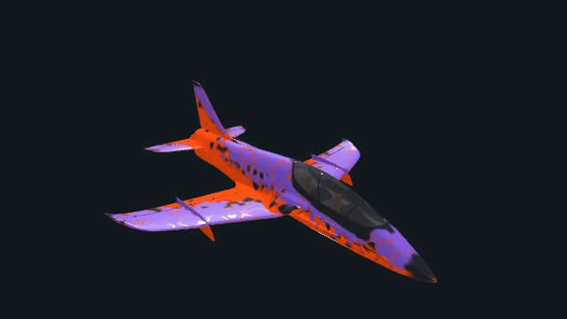
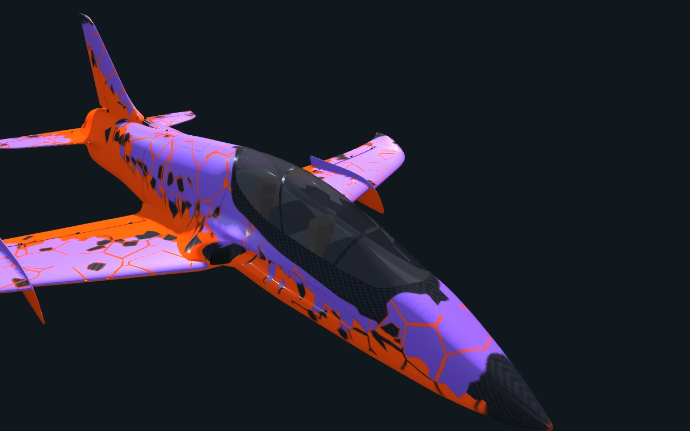
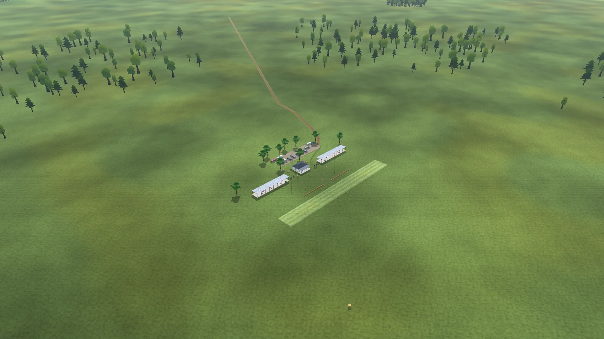
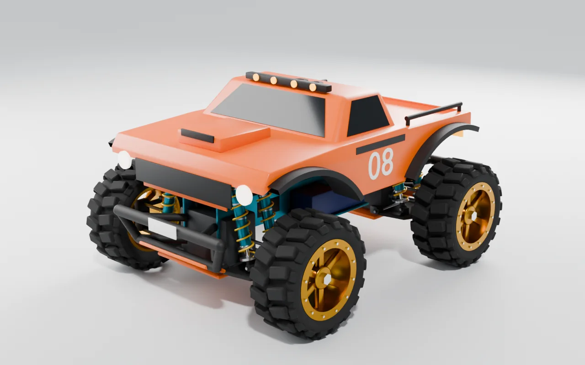

Un solver di volo dedicato.
Sei gradi di libertà calcolati in float64. Carichi aerodinamici locali, dinamica dei servi e propulsione specifica per ogni aereo.

Un simulatore di volo RC gratuito e open source.
Per Windows, Linux e macOS. Fase alfa iniziale.
OpenAI sostiene questo progetto con un abbonamento ChatGPT Pro. Questo supporto ci dà più spazio per fare ricerca, costruire e condividere OpenRC con la comunità dell’aeromodellismo.
Grazie, OpenAI ↗Idee da esplorare.
Codice da condividere.
Prodotti reali.
Nuove possibilità nel simulatore.
01 / L’HANGAR
Cinque aerei e un elicottero sperimentale.
Scegli un modello ed esploralo da ogni angolazione.

UN ALTRO RITMO
Propulsione a turbina e silhouette essenziale. Questa configurazione sperimentale parte in volo, con flap e carrello retratti.
Trascina per esplorare · Usa il cursore per cambiare angolazione.
ANCHE PER LO STIK: MAX-61FX · MAX-55AX · FS-64V. Tre installazioni glow sperimentali a due e quattro tempi.
CATALOGO DEL CODICE SORGENTE ATTUALE. I modelli sono sperimentali e richiedono ancora misurazioni e valutazione dei piloti. Il download v0.1.8 è uno snapshot distinto e può differire dal codice sorgente attuale.

VENTAGE JET / UNO SGUARDO DA VICINO
Cabina, ala e impennaggio. Tre viste del modello da esplorare in 3D.
02 / IL TUO PROSSIMO DECOLLO
v0.1.8 / DISPONIBILEScarica, estrai lo ZIP e avvia l’app.
Non serve installare Godot.
La v0.1.8 aggiunge il F4U Corsair sperimentale, un’impostazione per il dettaglio della scena, alberi 3D del campo e boschi lontani, oltre al profilo grafico High facoltativo. Il comportamento di volo richiede ancora valutazioni nel mondo reale.
Nel codice sorgente attuale, l’interfaccia del simulatore è disponibile in nove lingue: English · Español · 简体中文 · Português (Brasil) · Deutsch · Français · Italiano · Русский · 日本語. La versione v0.1.8 scaricabile è disponibile in inglese e spagnolo.
Versione software stabile v0.1.8. Gli ZIP non hanno installer né firma dell’archivio; l’app macOS è firmata ad hoc ma non notarizzata.
I modelli di aerei e veicoli terrestri restano sperimentali e richiedono misurazioni indipendenti e valutazione dei piloti.

03 / CI VEDIAMO AL CAMPO
La pista erbosa. Gli alberi all’orizzonte.
Vola dal punto di vista del pilota o segui il tuo aereo con le telecamere di volo.
04 / SOTTO LA CARENATURA
Costruiamo un simulatore RC un passo alla volta, con codice che puoi leggere, voli ripetibili e domande ancora aperte.
Esplora il codice sorgenteIMPLEMENTATO NEL CODICE SORGENTE ATTUALE
Sei gradi di libertà calcolati in float64. Carichi aerodinamici locali, dinamica dei servi e propulsione specifica per ogni aereo.
Trasmittente USB, gamepad o tastiera. Calibrazione salvata, armamento del gas e failsafe in caso di disconnessione.
Log di volo, replay esatto ed esportazione CSV per studiare il comportamento degli aerei con gli stessi input registrati.
ANATOMIA DELLA SIMULAZIONE
Esplora i sistemi già presenti nel codice sorgente. Ogni area rimanda alla documentazione e ai limiti attuali.
Solver personalizzato a sei gradi di libertà, integrazione RK4 a 240 Hz e stato float64. Carichi locali su ali e coda, trim, stalli, vite e dinamica delle superfici di controllo.
Motori glow a due e quattro tempi, benzina, propulsione elettrica e una turbina che va a regime. Coppia, effetti giroscopici, fattore P e scia dell’elica dipendono dai moduli di ogni aereo.
Rotazione indipendente di ogni ruota, sospensioni, sterzo, resistenza al rotolamento e slittamento degli pneumatici. Erba curata e terreno sconnesso hanno profili di superficie diversi.
Vento uniforme, raffiche ripetute e turbolenza con seme fisso. Quota, temperatura, pressione QNH e umidità configurabili per l’atmosfera fisica.
Trasmittente USB, gamepad e tastiera, con calibrazione, armamento e failsafe. Rate ed expo specifici per ogni aereo con tastiera e gamepad; le radio mantengono le proprie impostazioni.
Erba, alberi, un lago, edifici del club, veicoli, persone e uccelli. Suoni spaziali di motore, elica, vento, fogliame e fauna, con effetto Doppler legato al movimento.
Il contratto openrc-aircraft v2 richiede unità, tipo di prova e fonte. Le configurazioni non valide non possono volare. Geometria e dati fisici vengono rigenerati dalle rispettive fonti.
05 / IL MONDO OPENRC
Modelli, scenari, suoni e strumenti. Risorse originali e liberamente disponibili, con fonti e licenze.

Club, piazzole, aerei parcheggiati, veicoli, persone, alberi e un lago. Vegetazione e materiali da fonti gratuite, con i crediti conservati.
Esplora risorse e crediti ↗
Due veicoli RC sperimentali nel codice sorgente attuale: un garage, un circuito, sospensioni e fisica separata. Qui è mostrato Bisonte; Monster Car 2 amplia l’attività con la propulsione nitro.
Esplora l’attività dei veicoli RC ↗06 / PARTNER DEL PROGETTO
Grazie ai produttori che hanno autorizzato le rappresentazioni dei loro prodotti.
Savox autorizza le rappresentazioni dei suoi prodotti. Grazie per aver aperto il catalogo alla simulazione e aver offerto un contatto tecnico.
È prevista una selezione del catalogo dei servi.
Visita il produttore ↗SonicModell autorizza aspetto, nomi e marchio dei modelli inclusi nella nostra richiesta, compresi i modelli Skyhunter.
Il permesso è limitato all’uso concordato. L’integrazione è in sospeso.
Visita il produttore ↗Hitec autorizza OpenRC Simulator a presentare i servi pubblicati sui propri siti, con riferimenti e link ufficiali ai prodotti.
L’integrazione è in sospeso. Questo permesso non annuncia la compatibilità con le radio.
Visita il produttore ↗Aloft Hobbies ha condiviso il progetto sul suo forum e ha offerto conoscenze e feedback.
I permessi hanno ambiti specifici. Non implicano sponsorizzazione finanziaria né convalida dei nostri modelli fisici.
07 / SVILUPPO ALLA LUCE DEL SOLE
Versione software desktop stabile. Le note descrivono esattamente il contenuto del pacchetto.
Vai ai download ↑Aerei, motori, terreno, controlli e veicoli RC sperimentali, oltre all’elicottero. Il codice sorgente continua a evolversi.
Modifiche al progetto ↗Massa, centro di gravità, inerzia, propulsione, manovre e valutazione dei piloti. Il prossimo passo richiede prove.
Tabella di marcia e criteri di accettazione ↗IN RICERCA: gare FPV. Un drone pilotabile e una modalità gara non sono ancora disponibili.
PRIMA DEL PRIMO VOLO
Sì. OpenRC Simulator si scarica gratuitamente e il suo codice sorgente è disponibile con licenza MIT. Aerei, scenari e altre risorse mantengono le proprie licenze. Puoi esaminare il codice, segnalare problemi o contribuire su GitHub.
Scarica lo ZIP per il tuo sistema operativo, estrailo e avvia l’applicazione. Non serve installare Godot. Confronta il checksum dell’archivio con SHA256SUMS della stessa release e leggi le istruzioni per la piattaforma e i limiti di firma nella guida al primo avvio. Scegli il download.
No. Puoi usare una tastiera o un gamepad. Le trasmittenti USB possono essere usate come comandi di volo quando il sistema operativo le rileva come joystick compatibili; potrebbe essere necessario configurare e calibrare gli assi. La compatibilità non è garantita per ogni radio o adattatore. Consulta la guida a comandi e calibrazione.
OpenRC è un simulatore desktop. Questo sito mostra viste rotanti degli aerei e un visualizzatore 3D facoltativo; sono anteprime, non voli giocabili. Scarica l’app desktop per volare.
OpenRC ha un proprio solver di volo e modelli di aerei sperimentali. I test software e i log di volo ripetibili aiutano a rilevare regressioni, ma non dimostrano l’accuratezza fisica. Servono ancora misurazioni indipendenti e valutazioni dei piloti. Leggi la tabella di marcia della validazione e le note per l’aereo scelto.
UN PROGETTO APERTO. UN IMPEGNO CONDIVISO.
Una prova con la tua trasmittente. Una misurazione reale. Un miglioramento del codice. Ogni contributo aiuta a preparare il prossimo volo.
Contribuisci su GitHub ↗Condividi la tua esperienza ↗